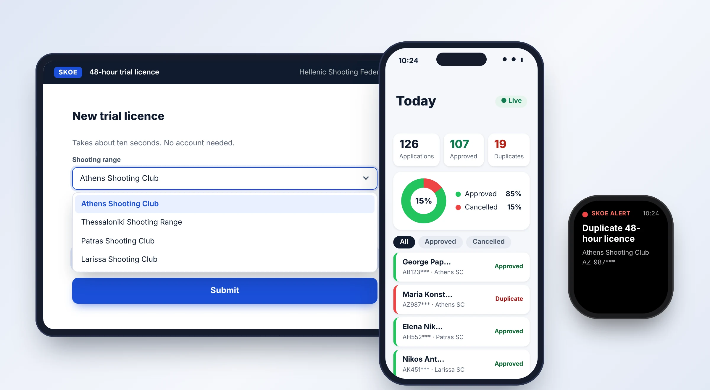

SKOE 48-Hour Licence Monitor
A silent radar for the Hellenic Shooting Federation (ΣΚΟΕ). Shooting ranges across the country submit 48-hour trial licences through a simple form, and the Federation’s office is alerted centrally and instantly when the same ID card is used twice, without slowing down the ranges.
Tasks
- Research
- UX UI design
- System architecture
- Workflow automation
- Dashboard design
- Technical manual

Overview
Every shooting range in Greece can issue 48-hour trial licences, and the Federation needs to know when the same person is issued more than one. The challenge was to give the Federation a central check without adding a single step of bureaucracy for the ranges.
I designed the whole chain: the “Zero Friction” interface strategy, the data flow, the duplicate-detection rule, the real-time alerts and the management dashboard. It runs on free, familiar tools (Google Forms, Google Sheets, AppSheet and Slack), so there is nothing to install and almost nothing to train.
Vision and interface strategy
Digitizing 48-hour licences needs an environment that is strict in its checks (the backend) and extremely simple and friendly for the user (the frontend). The design follows a philosophy of “Zero Friction”.
For the shooting ranges (data entry)
- Seamless access through the web.
- No installation and no passwords.
- Focus on typing speed.
- Clean, large fields for use on a tablet.
For the management (dashboard)
- Interactive elements.
- Colour coding (green / red).
- A “mobile-first” approach for the Secretary General.
- Real-time chart refresh.
The ranges should never feel burdened by a complicated bureaucratic system. The Federation’s management, on the other hand, needs complete, visual information to make decisions instantly.
Architecture and data flow
The system works as a “silent radar”. It collects applications from ranges all over the country and checks them centrally, from the Federation’s offices, for duplicate licences based on the ID card number, without creating blockages or delays for the ranges themselves.
1 · Entry
Google Forms. Ranges fill in an open web form. Zero cost, zero training.
2 · Storage
Google Sheets. Data lands instantly in a hidden central spreadsheet.
3 · Analysis
AppSheet reads the data and checks the ID card number against the history at once.
4 · Alert
Slack webhooks. If a duplicate is found, an alert goes to the control centre.
Data structure
One sheet (tab) named Trial_Licenses in Google Sheets. Its first row holds the headers below.
| Column | Type (AppSheet) | Description and use |
|---|---|---|
id | Text (Key) | Unique identifier. AppSheet formula: UNIQUEID() |
date_issued | DateTime | Default: NOW(). Records the time of the application. |
shooting_range | Text / Ref | The range making the submission (chosen from a dropdown). |
first_name | Name | The applicant’s first name. |
last_name | Name | The applicant’s last name. |
id_card_number | Text | The ID card number: the key for duplicate checks. |
status | Text | Calculated automatically: APPROVED or CANCELLED |
With a few sample rows, the sheet looks like this. The duplicates are flagged without anyone at the range seeing it.
Logic and rules
Because applications arrive through a Google Form, the status is calculated in the background by AppSheet. In Data › Columns › Trial_Licenses › status the following goes into the App formula field.
IF(
ISNOTBLANK(
FILTER("Trial_Licenses",
AND(
[id_card_number] = [_THISROW].[id_card_number],
[id] <> [_THISROW].[id]
)
)
),
"CANCELLED - DUPLICATE",
"APPROVED"
)The status labels are shown here in English. The live system uses Greek labels.
Alert automation
To notify the management in real time, without the extra cost of Zapier, a bot is created in AppSheet (Automations › Bots). It fires only when a new record is flagged as a duplicate.
Event type
Data Change (Adds Only)
Condition
[status] = "CANCELLED - DUPLICATE"
Action
Call a webhook
URL
The Incoming Webhook URL provided by Slack.
HTTP verb
POST
JSON body
A payload that carries the database fields into the Slack message (below).
{ "text": "🚨 *WARNING: Duplicate 48-hour licence detected!*\n\n*Shooting range:* <<[shooting_range]>>\n*Details:* <<[first_name]>> <<[last_name]>>\n*ID card no.:* <<[id_card_number]>>\n*Reported at:* <<[date_issued]>>\n\n_The system logged the attempt in the central database._" }Management dashboard
The Federation’s central user works with the data through an interface designed for immediate oversight. The dashboard is built in three stages.
Today’s activity
A data slice filtered with DATE([date_issued]) = TODAY(), so the interface shows the day’s data and is never confused by the history.
The chart
A pie chart that draws from the slice, grouped by status. Approved records are green, cancelled ones red.
The list
A deck view that shows first name, last name, ID card number and shooting range.
Interactive mode. The chart and the list are combined into one dashboard view. With Interactive Mode on, the user touches the red slice (“Cancelled”) of the pie and the list below filters instantly to reveal the names of the offenders.
1. Shooting range interface (web form preview)
The screen the range’s secretary sees. Designed on a white, minimalist background, it focuses only on collecting the three basic items quickly, with no unnecessary menus or distractions.
Mockup on a tablet, with sample data
User experience at the range
Dropdowns: the name of the range is chosen from a ready list, which removes spelling mistakes.
Instant submission: the clerk presses submit and the system records the application at once. No “rejection” messages are shown at the range, which keeps control entirely in the hands of the Federation.
2. Central dashboard (Federation management)
The heart of the control system. A modern AppSheet interface that groups thousands of records into one clean, interactive view. Here the data turns into knowledge at a glance.
Today at a glance
After tapping the red slice
Mockups on a phone, with sample data
Interactivity and oversight
Interactive chart: touching the red slice of the chart (15% in the mockup above) filters the list automatically to show only that day’s offenders.
Instant recognition: the colour marker on the left of each record (a green or red line) guides the reviewer’s eye straight to the problem spots.
3. Real-time alerts
The system does not wait for the management to look for the problem. When the “radar” detects an illegal second application, it pushes the information actively (a push notification) to the organization’s communication tool, Slack.
The alert in Slack, as a push notification on the phone and on a smartwatch
Design value
Zero-click information: the management receives the full report directly on their phone or smartwatch, without having to log in to the platform.
Discretion: the message is strict and direct, and it gives the Federation the time and the data to contact the range whenever it sees fit.
Future extensibility
The architecture is prepared for integration with future platforms. Automatic licence issuing (PDF generation) can be added as one more action in the existing bot, creating the licence in real time and emailing it back to the range. That would turn the “radar” into a fully automated administrative support system.
Related project
SKOE Information System: the athlete registry for the same Federation →